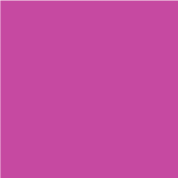
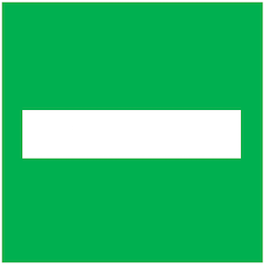

<!DOCTYPE html>
<html>
  <head>
    <title>Shapes and Decisions</title>
    <script src="https://ajax.googleapis.com/ajax/libs/jquery/1.11.1/jquery.min.js"></script>
    <script src="jspsych-6.0.5/jspsych.js"></script>
    <script src="jspsych-6.0.5/plugins/jspsych-instructions.js"></script>
    <script src="jspsych-6.0.5/plugins/jspsych-html-keyboard-response.js"></script>
    <script src="jspsych-6.0.5/plugins/jspsych-external-html.js"></script>
    <script src="jspsych-6.0.5/plugins/jspsych-image-keyboard-response.js"></script>
    <script src="jspsych-6.0.5/plugins/jspsych-survey-text.js"></script>
    <link href="jspsych-6.0.5/css/jspsych.css" rel="stylesheet" type="text/css"></link>
  	<script src="jspsych-6.0.5/plugins/jspsych-call-function.js"></script>
  </head>
  <body></body>
  <script>

  // Pavlovian Go/NoGo Task
  // Hayley Dorfman
  // 120 trials, 40 trials of each condition
  // 2 blocks
  // Random sampling of reward probs for Stim3 - 2 conditions [0.8,0.2],[0.5,0.5]

  var timeline = [];

  // Variables for quick edits
  var num_trials_per_stim = 20; // number of trials per stimulus
  var num_blocks = 2; //number of blocks

  // Randomly sample stimuli
  var stimuli = [
    'img/square-b.PNG', 'img/square-p.PNG', 'img/square-o.PNG', 'img/square-y.PNG', 'img/square-t.PNG'
  ];
  var use_stimuli = jsPsych.randomization.repeat(stimuli, 1);

  // Randomly sample assigned reward probability condition//
  // here is where you set which condition (high or low control) the subject will be assigned to//

    //first, what are the possible conditions you would want subjects to be assigned to (prob reward for stim 3)? uncomment one of the below options

  var all_rew_context = [[0.8,0.2],[0.5,0.5]]; //uncomment for running normally - subjs will be randomly assigned to either option in the array
  //var all_rew_context = [[0.8,0.2], [0.8,0.2]]; //uncomment for doing only 80/20 (high control) condition
  //var all_rew_context = [[0.5,0.5], [0.5,0.5]]; //uncomment for doing only 50/50 (low control) condition


  var reward_context = jsPsych.randomization.shuffle(all_rew_context); //shuffle the two rew prob options
  var reward_context_c1 = reward_context[0]; //pick one of the rew prob options - this probability will be used for the subject
  //var reward_context_c2 = reward_context[1]; //this is code used for the within-subjs version

  var reward_normal = [0.75,0.25]; // prob reward for stim 1 and 2


  // Initialize stimuli
  var go_stimulus = use_stimuli[0];
  var nogo_stimulus = use_stimuli[1];
  var context_stimulus = use_stimuli[2]; // add in 3rd stim
  var fixation = {
    type: 'html-keyboard-response',
    stimulus: '<div style="font-size:60px;">+</div>',
    choices: jsPsych.NO_KEYS,
    trial_duration: 1500 // ms
  };


  // Variable to keep track of most recent trial (to compare correctness)
  var trial_node_id = '';


  /// Consent
  // var check_consent = function(elem) {
  // 	if ($('#consent_checkbox').is(':checked')) { return true; }
  // 	else {
  // 		alert("If you wish to participate, you must check the box.");
  // 		return false;
  // 	}
  // 	return false;
  // };
  //
  // var consent_block = {
  // 	type:'external-html',
  // 	url: "consent2.html",  // insert your own consent form here
  // 	cont_btn: "start",
  // 	check_fn: check_consent
  // };
  // timeline.push(consent_block);

  // Instructions
  var instructions_block = {
    type: 'instructions',
    pages: [
      // Welcome (page 1)
      '<p class="center-content">Welcome to the experiment!</p>' +
      '<p class="center-content">You will earn $2 plus a possible bonus for completing this HIT.</p>' +
      '<p class="center-content">Press "Next" to view the game instructions.</p>',
      // Instructions (page 2)
      '<p class="center-content">You will be shown three different colored squares, one at a time, and you will need to make a decision to either:</p>' +
      '<p class="center-content">1) <b> PRESS </b> the spacebar or 2) <b> NOT PRESS </b> anything.</p>' +
      '<p class="center-content">You will only see each square for a very short time, so please make a decision as fast as you can!</p>' +
      '<p class="center-content">Here are some example squares you will see during the practice. You might see different colors during the actual game.</p>' +

      '<table style="margin-left:auto;margin-right:auto;table-layout:fixed !important; width:650px;"><tr>' +
      '<td></td>' +
      '<td></td>' +
      '<td></td>' +
      '</tr><tr>' +
      '<td>Green Square</td><td>Gray Square</td><td>Pink Square</td>' +
      '</tr></table>',
      // Instructions (page 3)
      '<p class="center-content">Each time you see a square, you should decide whether to press the spacebar or not before the square disappears.</p>' +
      '<p class="center-content">Once the time is up, you will see whether you won money or won nothing.</p>',
      '<p class="center-content">Your goal is to learn which square(s) you should press spacebar for and which square(s) you should not press anything for by paying attention to when you are and are not rewarded.</p>' +
      '<p class="center-content">You will receive a small amount of real bonus money each time you see the dollar signs, and you will be shown your bonus after completing the experiment.</p>' +
      '<p class="center-content">Sometimes, you will receive a reward even if you make the incorrect response, but most of the time, only a correct response will lead to a reward. Not receiving a reward is a neutral outcome and has no effect on your bonus earnings.</p>' +
      '<table style="margin-left:auto;margin-right:auto;table-layout:fixed !important; width:650px;"><tr>' +
      '<td></td>' +
      '<td></td>' +
      '</tr><tr>' +
      '<td>Reward</td><td>Neutral Result</td>' +
      '</tr></table>',
      //Instructions (page 4)
      '<p class="center-content">We will offer you a break halfway through the game.</p>' +
      '<p class="center-content">However, please note that nothing will change when you resume the game.</p>' +
      '<p class="center-content">You will see the same colored squares.</p>',
      //Instructions (page 5)
      '<p class="center-content">Please try your best to make the best response for each square. We really appreciate your hard work! </p>' +
      '<p class="center-content">Please note that if you respond randomly, always press, or never press, we reserve the right to withold your bonus.</p>',
      // Instructions (page 6)
      '<p class="center-content">We will begin with a practice to get used to the buttons and timing.</p>' +
      '<p class="center-content">Press spacebar for the green square, and do not press anything for the gray square or the pink square.</p>' +
      '<p class="center-content">There will be 15 practice trials.</p>' +
      '<p class="center-content">Please remember that you only have a short time to make the decision of whether or not to press the spacebar.</p>' +
      '<table style="margin-left:auto;margin-right:auto;table-layout:fixed !important; width:650px;"><tr>' +
      '<td></td>' +
      '<td></td>' +
      '<td></td>' +
      '</tr><tr>' +
      '<td>Press spacebar!</td><td>Do not press!</td><td>Do not press!</td>'+
      '</tr></table>' +
      '<p class="center-content">Please press "Next" to begin the practice.</p>'
    ],
    show_clickable_nav: true,
    allow_backward: true,
    show_page_number: true
  };
  timeline.push(instructions_block);

  // Prepare stimuli for practice
  var practice_stimuli = [
    { practice_stimulus: 'img/test1.PNG', data: { test_part: 'practice', correct_response: 32 } },
    { practice_stimulus: 'img/test2.PNG', data: { test_part: 'practice', correct_response: null } },
    { practice_stimulus: 'img/test3.PNG', data: { test_part: 'practice', correct_response: null } } ];

  var practice_trial = {
    type: 'image-keyboard-response',
    stimulus: jsPsych.timelineVariable('practice_stimulus'),
    choices: [32],
    trial_duration: 2000,  // ms
    data: jsPsych.timelineVariable('data'),
    on_finish: function(data) {
      data.correct = data.key_press == data.correct_response;
      trial_node_id = jsPsych.currentTimelineNodeID();
    }
  };
  var practice_feedback = {
    type: 'image-keyboard-response',
    stimulus: function() {
      var prev_trial = jsPsych.data.getDataByTimelineNode(trial_node_id);
      var prev_trial_correct = prev_trial.select('correct').values[0];
      var prev_trial_stim = prev_trial.select('stimulus').values[0].substring(0,9); // Selects name without the .PNG to add overlaid $$$ or bar for reward and neutral
      return (prev_trial_correct ? prev_trial_stim + '-reward.PNG' : prev_trial_stim + '-neutral.PNG');
    },
    choices: jsPsych.NO_KEYS,
    trial_duration: 1500  // ms
  };

  var practice_block = {
    timeline: [practice_trial, practice_feedback, fixation],
    timeline_variables: practice_stimuli,
    randomize_order: true,
    repetitions: 5
  };
  timeline.push(practice_block);

  var practice_finished = {
    type: 'instructions',
    pages: ['You have completed the practice. Press "Begin" to start the experiment.'],
    show_clickable_nav: true,
    button_label_next: 'Begin'
  };
  timeline.push(practice_finished);

  // Prepare timeline variables (stimuli) for actual trials

  var cue_stimuli = [];
    cue_stimuli.push(
      [ { stimulus: go_stimulus,
        data: { test_part: 'trial', correct_response: 32, use_rew: reward_normal, which_stim: 'normal' } },
        { stimulus: nogo_stimulus,
        data: { test_part: 'trial', correct_response: null, use_rew: reward_normal, which_stim: 'normal' } },
        { stimulus: context_stimulus,
        data: { test_part: 'trial', correct_response: 32, use_rew: reward_context_c1, which_stim: 'context' } } ] //GO is the correct response for the context stim
    );


  // Block 1
  var trial = {
    type: 'image-keyboard-response',
    stimulus: jsPsych.timelineVariable('stimulus'),
    choices: [32],
    trial_duration: 2000,  // ms
    data: jsPsych.timelineVariable('data'),
    on_finish: function(data) {
      data.correct = data.key_press == data.correct_response;
      //data.p_reward = use_rew;
      trial_node_id = jsPsych.currentTimelineNodeID();
    }
  };


  var feedback = {
    type: 'image-keyboard-response',
    data: jsPsych.timelineVariable('data'),
    stimulus: function() {
      var prev_trial = jsPsych.data.getDataByTimelineNode(trial_node_id);
      var prev_trial_correct = prev_trial.select('correct').values[0];
      var prev_trial_stim = prev_trial.select('stimulus').values[0].substring(0,12); // Selects name without the .PNG to add overlaid $$$ or bar for reward and neutral
      var use_me = prev_trial.select('use_rew').values;
      var image_used = prev_trial.select('stimulus').values[0];
      //var which_stim = prev_trial.select('which_stim').values;
      var reward = prev_trial_stim + '-reward.PNG';
      var neutral = prev_trial_stim + '-neutral.PNG';


      return (prev_trial_correct ?
        (Math.random() < use_me[0][0] ? reward : neutral) :
        (Math.random() < use_me[0][1] ? reward : neutral) );


    },
    choices: jsPsych.NO_KEYS,
    trial_duration: 1500,  // ms
    on_finish: function(data) {
      fb_node_id = jsPsych.currentTimelineNodeID();
      var feedback_data = jsPsych.data.getDataByTimelineNode(fb_node_id);
      var fb_full = feedback_data.select('stimulus').values[0];
      var outcome = fb_full.substring(fb_full.length -4, 13);
      var feedback_num = (outcome == 'reward' ? 1 : 0);
      jsPsych.data.get().addToLast({feedback: outcome});
      jsPsych.data.get().addToLast({feedback_num: feedback_num});

    }
  };


  var block = {
    timeline: [trial, feedback, fixation],
    timeline_variables: cue_stimuli[0],
    randomize_order: true,
    repetitions: num_trials_per_stim
  };
  timeline.push(block);

  var between_block = {
    type: 'instructions',
    pages: [
      '<p class="center-content">You have completed half of the game. Take a break if you would like and then press "Next" to continue.</p>'
    ],
    show_clickable_nav: true
  };
  timeline.push(between_block);

  //Block 2
  var trial = {
    type: 'image-keyboard-response',
    stimulus: jsPsych.timelineVariable('stimulus'),
    choices: [32],
    trial_duration: 2000,  // ms
    data: jsPsych.timelineVariable('data'),
    on_finish: function(data) {
      data.correct = data.key_press == data.correct_response;
      //data.p_reward = p_reward;
      trial_node_id = jsPsych.currentTimelineNodeID();
    }
  };
  var feedback = {
    type: 'image-keyboard-response',
    data: jsPsych.timelineVariable('data'),
    stimulus: function() {
      var prev_trial = jsPsych.data.getDataByTimelineNode(trial_node_id);
      var prev_trial_correct = prev_trial.select('correct').values[0];
      var prev_trial_stim = prev_trial.select('stimulus').values[0].substring(0,12); // Selects name without the .PNG to add overlaid $$$ or bar for reward and neutral
      var use_me = prev_trial.select('use_rew').values;
      var image_used = prev_trial.select('stimulus').values[0];
      var which_stim = prev_trial.select('which_stim').values;
      var reward = prev_trial_stim + '-reward.PNG';
      var neutral = prev_trial_stim + '-neutral.PNG';


      return (prev_trial_correct ?
        (Math.random() < use_me[0][0] ? reward : neutral) :
        (Math.random() < use_me[0][1] ? reward : neutral) );

    },
    choices: jsPsych.NO_KEYS,
    trial_duration: 1500,  // ms
    on_finish: function(data) {
      fb_node_id = jsPsych.currentTimelineNodeID();
      var feedback_data = jsPsych.data.getDataByTimelineNode(fb_node_id);
      var fb_full = feedback_data.select('stimulus').values[0];
      var outcome = fb_full.substring(fb_full.length -4, 13);
      var feedback_num = (outcome == 'reward' ? 1 : 0);
      jsPsych.data.get().addToLast({feedback: outcome});
      jsPsych.data.get().addToLast({feedback_num: feedback_num});


    }
  };

  var block = {
    timeline: [trial, feedback, fixation],
    timeline_variables: cue_stimuli[0],
    randomize_order: true,
    repetitions: num_trials_per_stim
  }
  timeline.push(block);


  // Calculate bonus at end
  var bonus_block = {
    type: 'instructions',
    pages: function() {
      var correct_bonus = Math.round(100 * jsPsych.data.get().filter({correct: true}).count() / (num_blocks * 2 * num_trials_per_stim + 2)); // Includes practices (+2)
      jsPsych.data.addDataToLastTrial({"bonus": correct_bonus});
      return ['<p class="center-content">You won a bonus of <b>$' + (correct_bonus == 100 ? '1.00' : '0.' + correct_bonus) + '</b>.</p>' +
        '<p class="center-content"> IMPORTANT: <b>Press "Next"</b> to continue to the survey questions.</p>'];
    },
    show_clickable_nav: true
  }
  timeline.push(bonus_block);

  // Survey
  var survey_workerid = {
    type: 'survey-text',
    questions: [{prompt: 'Please input your Mturk Worker ID so that we can pay you the appropriate bonus. Your ID will not be shared with anyone outside of our research team.', value: 'Worker ID'}]
  };

  var survey_comments = {
    type: 'survey-text',
    questions: [{prompt: 'We\'re always trying to improve. Please let us know if you have any comments.</br> Click "Submit Answer" to finish the experiment.', value: 'Comments'}],
    button_label: 'Submit Answer'
  };
  timeline.push(survey_workerid, survey_comments);

  // Add information to data
  var subject_id =  jsPsych.randomization.randomID(8); // Random subject ID
  jsPsych.data.addProperties({
    subject_id: subject_id
  });

  var turkInfo = jsPsych.turk.turkInfo();
  jsPsych.data.addProperties({
    assignmentID: turkInfo.assignmentId
  });
  jsPsych.data.addProperties({
    mturkID: turkInfo.workerId
  });
  jsPsych.data.addProperties({
    hitID: turkInfo.hitId
  });
  jsPsych.data.addProperties({
    task_version: "v7"
  });
  jsPsych.data.addProperties({
    condition: reward_context_c1
  });

  // Save data to CSV
  function saveData(name, data){
    var xhr = new XMLHttpRequest();
    xhr.open('POST', 'save_data.php');
    xhr.setRequestHeader('Content-Type', 'application/json');
    xhr.send(JSON.stringify({filename: name, filedata: data}));
  }

  /* grab data before the end of the experiment */

  var save_data = {
    type: 'call-function',
    func: function(){ saveData(subject_id + '_output', jsPsych.data.get().csv());
    }
    ,timing_post_trial: 0
  };


  timeline.push(save_data);

  var urlVar = jsPsych.data.urlVariables();
  var keyLink = "https://harvard.az1.qualtrics.com/jfe/form/SV_7PUKSqDsotwNiM5/?&workerId=" + turkInfo.workerId + "&assignmentId=" + turkInfo.assignmentId + "&hitId=" + turkInfo.hitId + "&a=" + urlVar.a + "&b=" + urlVar.b + "&c=" + urlVar.c

  /* grab data before the end of the experiment */

  var delayitem = {
    type: 'instructions',
    pages: [
      // Delay (page 1)
      '<p class="center-content">Click to get your key.</p>',
    ],
    show_clickable_nav: true,
    allow_backward: false,
    show_page_number: false
  };


  timeline.push(delayitem);


  // Preload images and initialize experiment
  images = ['img/square-b-reward.PNG', 'img/square-p-reward.PNG', 'img/square-o-reward.PNG', 'img/square-y-reward.PNG', 'img/square-b-neutral.PNG', 'img/square-p-neutral.PNG', 'img/square-o-neutral.PNG', 'img/square-y-neutral.PNG', 'img/test1.PNG', 'img/test1-reward.PNG', 'img/test1-neutral.PNG', 'img/test2.PNG', 'img/test2-reward.PNG', 'img/test2-neutral.PNG', 'img/square-t-neutral.PNG', 'img/square-t-reward.PNG', 'img/square-t.PNG'].concat(stimuli);
  jsPsych.pluginAPI.preloadImages(images, function(){ startExperiment(); });

  function startExperiment() {
    jsPsych.init({
      timeline: timeline,
      on_finish: function() { window.location.href = keyLink; }
    });
  }
  </script>

</html>
